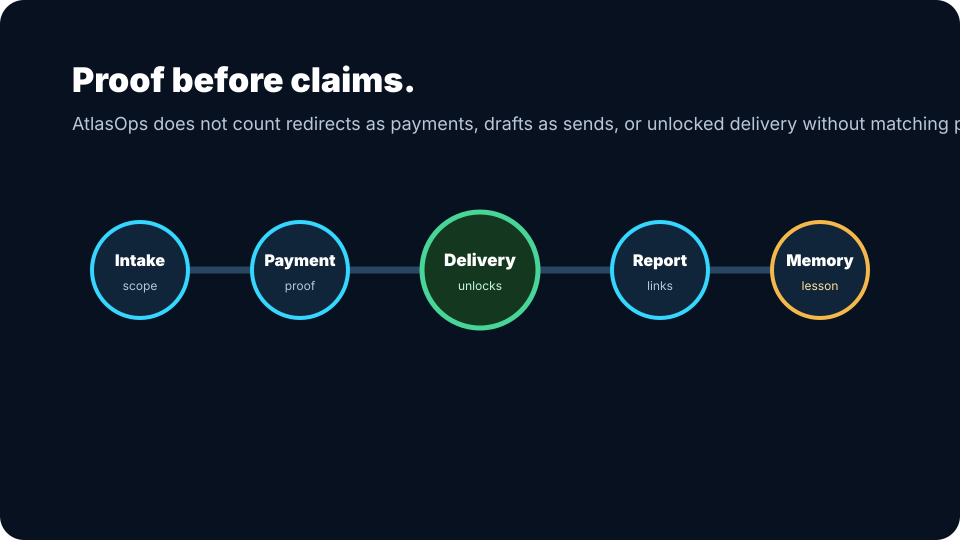

Long-horizon work
Tasks stay active across stages with proof, blockers, and next actions.
Public claims stay tied to capability levels. Atlas does not call a lane production-ready unless the proof supports it.

Tasks stay active across stages with proof, blockers, and next actions.
Hermes, Apex, Guardian, Proof, Learning, Toolsmith, Codex, and revenue lanes own different work.
Learning, blockers, BuildSpecs, design decisions, and daily proof become durable memory.
Free review, quick fix, follow-up, monitoring, and merchant handoff paths are separated by offer.
External sends and posts require policy, suppression, proof, and platform gates.
ComfyUI, Chatterbox, and visual provider lanes are promoted only after eval proof.
AtlasOps starts narrow on purpose. The first job is to find the leak, fix the smallest useful path, and keep the proof visible.